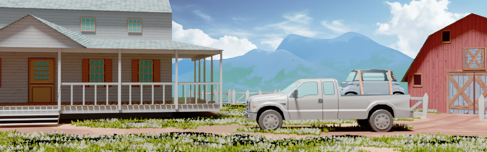

American truck F250
2024-08-24
American cars tends to be on the larger side. This Ford F250 Super Duty truck has a bed just large enough to carry the smallest car on our list : The citroen ami.
2024-08-24
American cars tends to be on the larger side. This Ford F250 Super Duty truck has a bed just large enough to carry the smallest car on our list : The citroen ami.
2024-08-17
The Peugeot 504 was introduced in 1968. It broke from Peugeot’s traditionally conservative design language, embracing a more modern and dynamic aesthetic.
In countries like Nigeria, Côte d'Ivoire, and Kenya, the 504 remained sold until the XXI century. The car's durability was largely due to its robust build quality, exceptional ground clearance, and rear-wheel-drive layout, making it well-suited for the challenging road conditions commonly found across the continent.
The 504 eventually faced stiff competition from Japanese automakers. Brands like Toyota and Nissan began to gain a foothold in the African market in the late 1980s and 1990s, offering vehicles that were not only reliable but also more affordable and easier to maintain.
Interestingly, the 504 also found some success in the United States, one of the few French cars to do so in the post-war era. In the U.S., it was marketed as a premium European import. Its success in the U.S. was among the last of its kind for a French car, as the American market became increasingly dominated by German and Japanese imports.
2024-07-21
Reunited for an improbable duel, the Tesla Cybertruck vs the Citroën C15D. Both vehicles boast cargo space large enough to transport a small hay bale or your various farming tools and can get you from point A to point B using the same time in your law abiding journey.
Released to the public in 2023, the Cybertruck promised extraordinary capabilities. However, its initial tests left much to be desired, especially in terms of off-road performance, where it struggled with even basic obstacles. This shortfall led to humorous comparisons on the web with the Citroën C15D, a vehicle nearly 40 years older and ten times cheaper. Originally meant as a joke, these comparisons highlighted how a decades-old, budget-friendly vehicle could, in many ways, rival the futuristic Cybertruck in practical off-road capability.
The C15D, despite its age, remains a model of durability and practicality while being exceptionally affordable. It’s no wonder you can still spot these workhorses navigating the rural roads of France.
This comparison begs the question: Do you really need to spend a fortune to have fun and get the job done?
Despite its flaws, the Cybertruck deserves credit for pushing the boundaries of automotive design and attempting to reinvigorate a field that has remained largely static for years. Innovation comes with risks and challenges, especially when trying to match or surpass the tried-and-true behemoths that have dominated the market for so long.